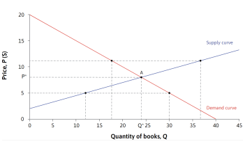
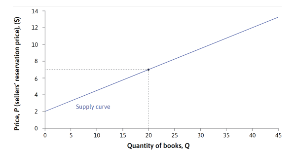
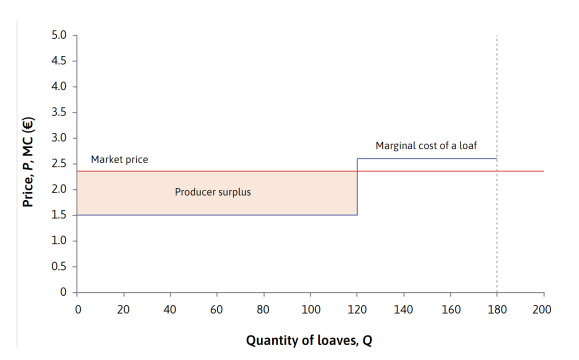
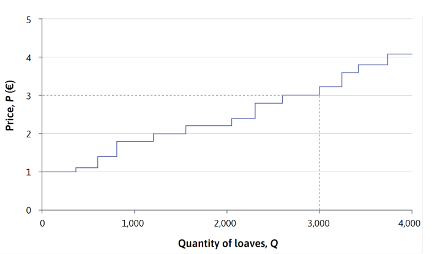

Supply and Demand
§1. Core Ideas
Supply dan demand menentukan harga pasar melalui interaksi banyak pembeli dan penjual, dimana masing-masing bertindak mengikuti harga (price-taker). Perubahan harga memberi sinyal kepada individu untuk menyesuaikan produksi dan konsumsi mereka demi memaksimalkan utilitas, sehingga sumber daya digunakan lebih efisien tanpa intervensi dari pemerintah.
§2. Kurva Demand, Supply, dan Harga Pasar
Definition 2.1. Kurva demand menggambarkan hubungan antara harga suatu barang dan jumlah barang yang ingin dibeli oleh konsumen. Setiap konsumen memiliki willingness to pay (WTP), yaitu harga maksimum yang bersedia mereka bayar untuk suatu produk yang berbeda-beda antar individu. Semakin rendah harga produk, semakin banyak konsumen yang tertarik membeli karena harga tersebut lebih rendah dibandingkan dengan WTP mereka. Kurva demand dapat digambarkan dengan mengurutkan konsumen berdasarkan WTP mereka dari yang tertinggi hingga terendah, dan menunjukkan jumlah konsumen yang bersedia membeli produk pada berbagai tingkat harga.
Definition 2.2. Kurva supply menunjukkan hubungan antara harga suatu barang dan jumlah barang yang bersedia dijual oleh produsen. Setiap produsen memiliki willingness to accept (WTA), yaitu harga minimum yang mereka terima untuk menjual produk tersebut, yang berbeda-beda antar individu. Semakin tinggi harga produk, semakin banyak penjual yang tertarik untuk menjual karena harga tersebut lebih tinggi dibandingkan dengan WTA mereka. Kurva supply dapat digambarkan dengan mengurutkan penjual berdasarkan WTA mereka dari yang terendah hingga tertinggi, dan menunjukkan jumlah barang yang akan dijual pada berbagai tingkat harga.
arket mempertemukan pembeli dan penjual, di mana masing-masing ingin mendapatkan harga terbaik sesuai kepentingannya. Jika harga barang terlalu tinggi, pembeli akan sedikit, sehingga penjual terdorong menurunkan harga dan sebaliknya. Harga pasar akan cenderung menyesuaikan ke market clearing price, yaitu harga di mana jumlah buku yang diminta sama dengan jumlah yang ditawarkan. Sebagai contoh, pada diagram di bawah, harga pasar akan mendekati $8, di mana 24 pembeli dan 24 penjual sepakat bertransaksi..
Pasar dikatakan mencapai equilibrium saat jumlah barang yang diminta sama dengan jumlah barang yang ditawarkan, sehingga tidak ada dorongan perubahan harga. Jika harga lebih tinggi dari harga keseimbangan, akan terjadi excess supply, di mana jumlah barang yang ditawarkan melebihi permintaan. Sebaliknya, jika harga lebih rendah dari harga keseimbangan, akan terjadi excess demand, di mana permintaan melebihi jumlah barang yang tersedia. Pada situasi ini, setiap pelaku ekonomi bertindak sebagai price-taker dan penyesuaian harga akan terus berlangsung sampai tercapai harga keseimbangan di mana supply dan demand seimbang.
§3 Perusahaan di Pasar Kompetitif
Dalam pasar persaingan sempurna, ketika produk identik dan konsumen mudah beralih antar penjual, perusahaan menjadi price-taker dan tidak bisa menaikkan harga sesuka hati. Contohnya, di sebuah kota, banyak bakery kecil menjual baguette yang sama, dan satu bakery harus mengikuti harga pasar €2.35 agar bisa tetap menjual. Bakery tersebut akan memilih memproduksi sampai 120 loaf per hari, karena hingga kapasitas itu, biaya marginal produksi (€1.50) masih lebih rendah dari harga jual, sehingga tiap loaf memberi surplus €0.85. Jika memproduksi lebih dari 120 loaf, biaya tambahan naik menjadi €2.60 per loaf, menyebabkan kerugian per unit, jadi untuk memaksimalkan profit, bakery tetap di produksi 120 loaf.
Dalam pasar kompetitif, kurva supply individu menggambarkan jumlah barang yang akan diproduksi oleh satu perusahaan pada berbagai tingkat harga, berdasarkan titik di mana harga pasar sama dengan biaya marginalnya. Misalnya, satu bakery akan memproduksi 120 roti saat harga €2.35, dan menambah produksi hingga 180 roti jika harga naik di atas €2.60. Sedangkan kurva supply pasar didapat dengan menjumlahkan seluruh kuantitas roti yang ditawarkan oleh semua bakery di kota pada setiap tingkat harga, diurutkan dari biaya marginal terendah. Contohnya, kurva penawaran pasar untuk 15 bakery akan menggabungkan semua roti yang bisa diproduksi, dari bakery dengan biaya produksi paling murah hingga paling mahal sesuai ilustrasi.
 Next »